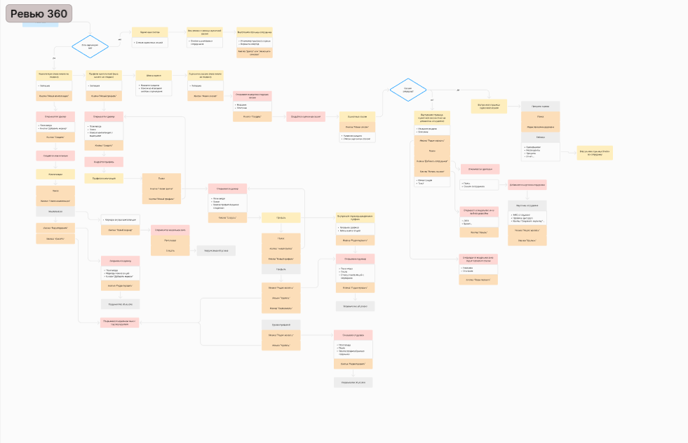
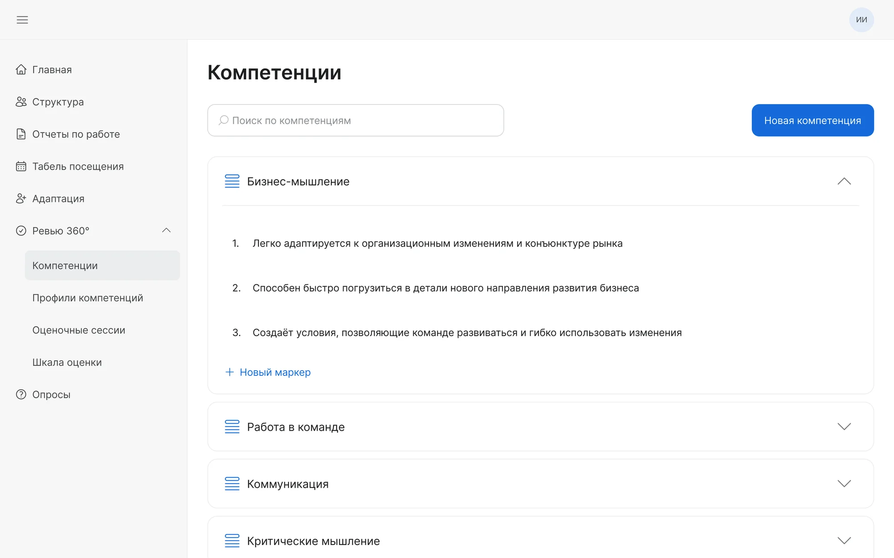
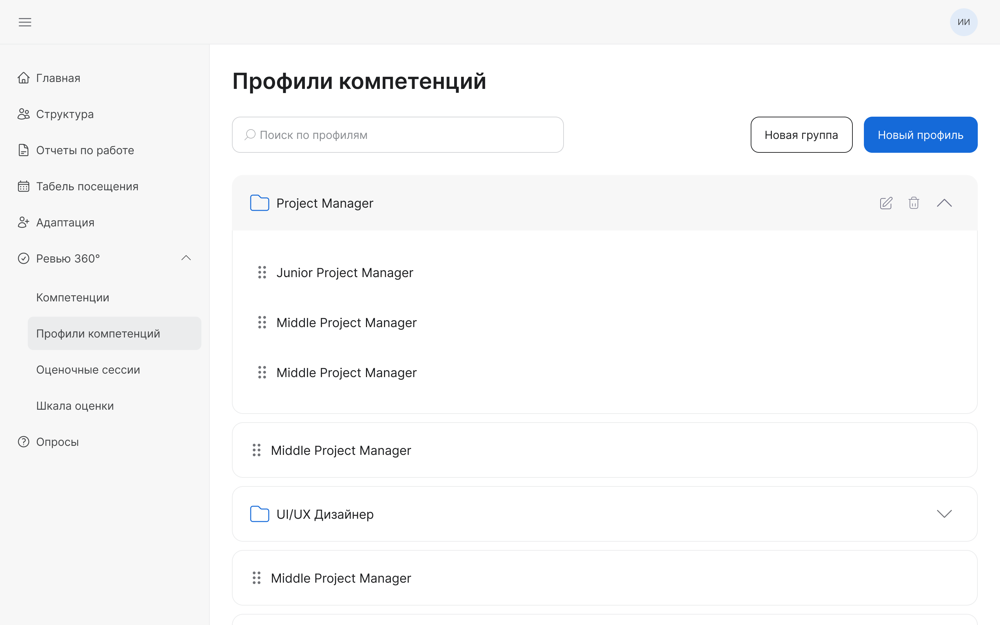
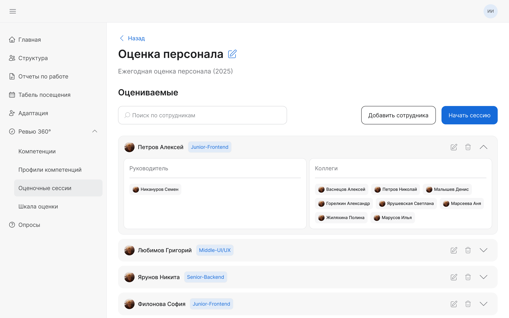
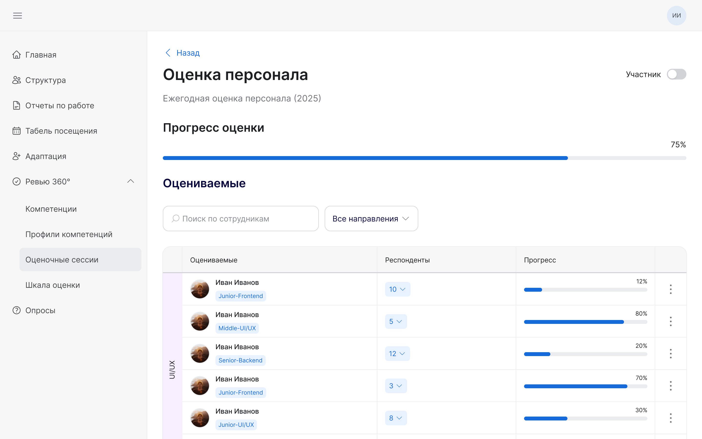
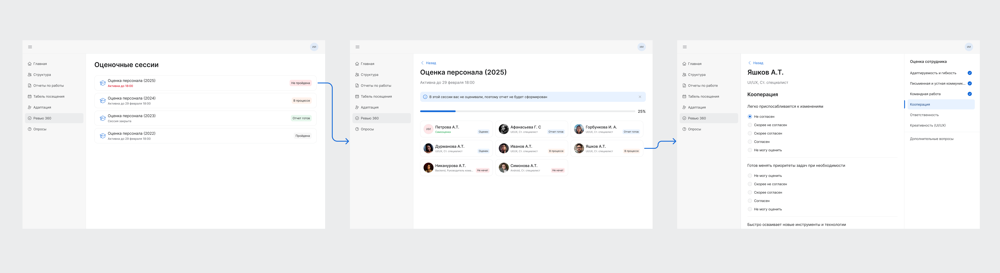
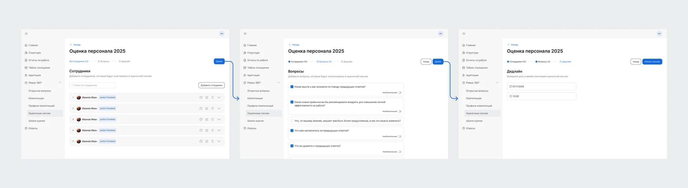
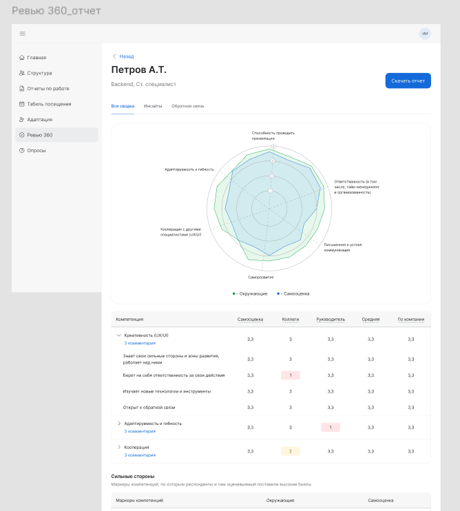

Кейс № 2
Функционал для проведения ревью 360°
B2EWeb

Задача и итог
Проблема
Компания решила внедрить ежегодную систему оценки уровня навыков сотрудников, однако привлечение сторонних специалистов и использование внешних сервисов оказалось нерепрезентативным и затратным.
Задача
Создать функционал, который позволит HR проводить внутреннюю оценку персонала самостоятельно, с минимальными временными и финансовыми затратами.
Результаты
- Спроектировала MVP-версию функционала для проведения ревью 360°.
- Благодаря внедрению ревью 360° компания отказалась от сторонних решений, получив контроль над функциональностью и более репрезентативные данные.
- Первый цикл оценки прошёл целиком внутри сервиса: HR собрали сессию сами, без внешних подрядчиков. По его итогам 15% сотрудников получили повышение грейда.
Как шла работа
Этапы
- 1Анализ конкурентов
- 2Создание информационной архитектуры
- 3Проработка макетов
- 4Сбор обратной связи от сотрудников
- 5Доработка макетов
- 6Финальный результат
Анализ конкурентов
При анализе конкурентов я столкнулась с тем, что большинство сервисов для проведения ревью 360° находятся в закрытом доступе. Чтобы обойти эту проблему, я изучила косвенных конкурентов с похожими решениями и выделила наиболее подходящие механики для проекта.
Информационная архитектура
Из-за большого объёма функционала возникла необходимость спроектировать информационную архитектуру, чтобы структурировать будущие пользовательские флоу и избежать путаницы.

Проработка макетов
На основе конкурентного анализа и обсуждений с HR я пришла к выводу, что удобнее реализовать постепенное заполнение сессии. При таком подходе данные сохраняются в разных разделах, что позволяет повторно их использовать, а не создавать новые элементы. В результате для первой итерации было выделено три основных раздела:




Прохождение оценочной сессии сотрудником было упрощено, чтобы процесс был интуитивным. Ниже показан флоу взаимодействия.

Доработка макетов
После первого использования функционала HR и сотрудниками были получены рекомендации и предложения по улучшению удобства работы и расширению возможностей. В результате во второй итерации был добавлен раздел «Открытые вопросы».
Кроме того, функционал создания сессии был переработан и разделён на три логических этапа, что упростило процесс создания сессии для HR.

Также я переработала отображение отчёта по конкретному сотруднику, включив в него диаграмму.
